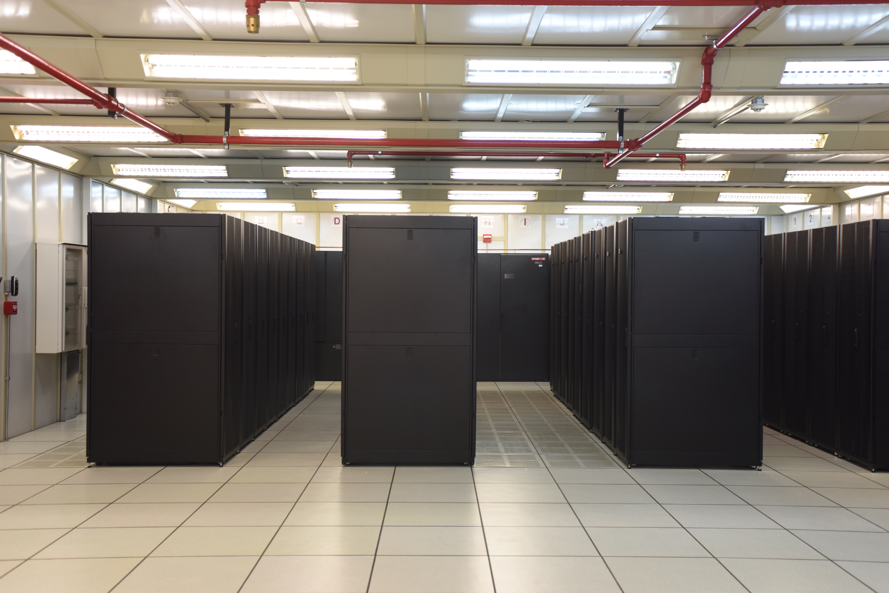

Article Talks
From Wikipedia, the free encyclopedia
A Data center is a facility used to house computer systems and associated components, such as telecommunications and storage [1][2]

Since IT operations are crucial for business continuity, a data center generally includes redundant or backup
components and infrastructure for power supply, data communication connections, environmental controls (e.g.,
cooling, fire suppression), and security devices. Data centers are the foundation of the digital
infrastructure that powers the modern economy, aggregating collective computing demands for cloud services,
video streaming, blockchain and crypto mining, machine learning, and virtual reality.[3] Large data centers
operate at an industrial scale, requiring significant energy. Estimated global data center electricity
consumption in 2024 was around 415 terawatt hours (TWh), or about 1.5% of global electricity demand.[4] The IEA
projects that data center electricity consumption could double by 2030.[4] High demand, driven by artificial
intelligence (AI) and machine learning workloads is accelerating the deployment of high-performance servers,
leading to greater power density and increased strain on electric grids.[5][4]
Data centers can vary widely in terms of size, power requirements, redundancy, and overall structure. Four common categories used to segment types of data centers are onsite data centers, colocation facilities, hyperscale data centers, and edge data centers.[6] In particular, colocation centers often host private peering connections between their customers, internet transit providers, cloud providers,[7][8] meet-me rooms for connecting customers together[9] Internet exchange points,[10][11] and landing points and terminal equipment for fiber optic submarine communication cables,[12] which are critical to connecting the internet.[13]
Data centers have their roots in the huge computer rooms of the 1940s, typified by ENIAC, one of the earliest examples of a data center.[14][note 1] Early computer systems, complex to operate and maintain, required a special environment in which to operate. Many cables were necessary to connect all the components, and methods to accommodate and organize these were devised such as standard racks to mount equipment, raised floors, and cable trays (installed overhead or under the elevated floor). A single mainframe required a great deal of power and had to be cooled to avoid overheating. Security became important – computers were expensive, and were often used for military purposes.[14][note 2] Basic design guidelines for controlling access to the computer room were therefore devised.